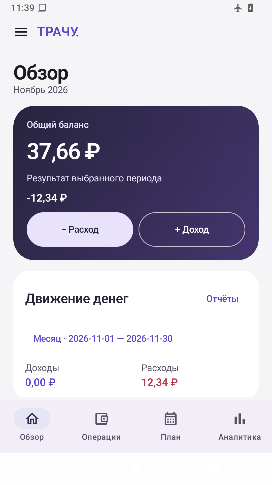
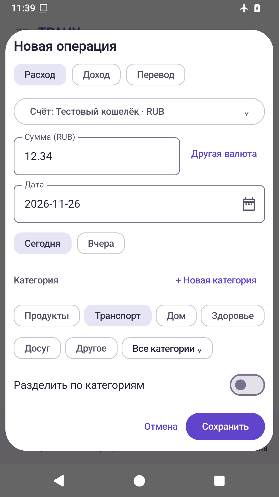
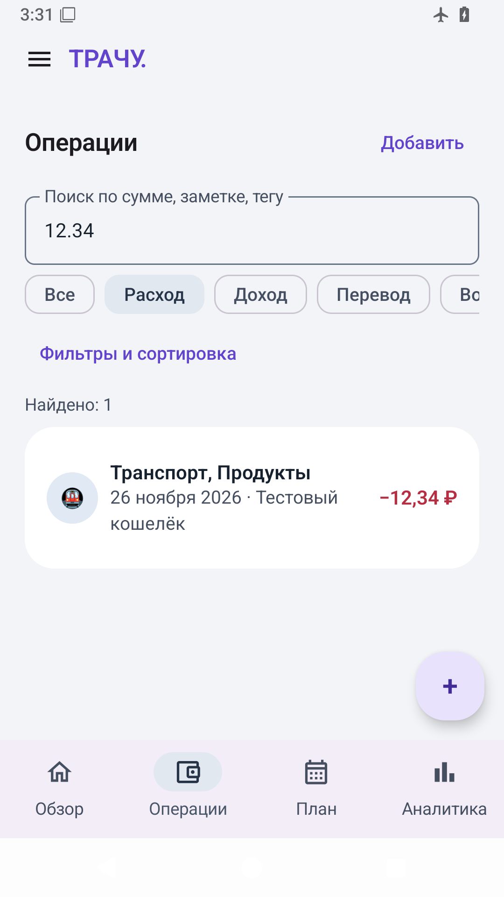
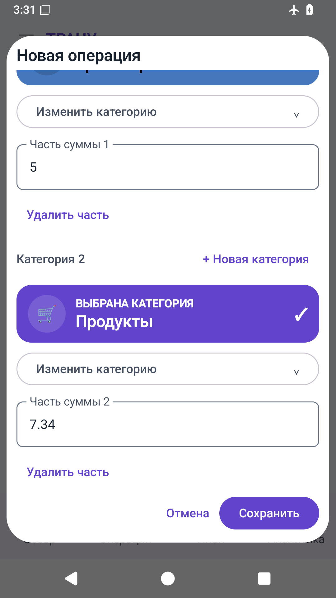
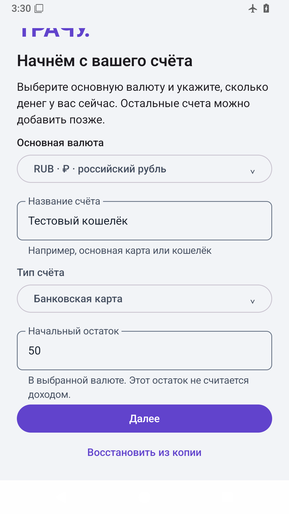
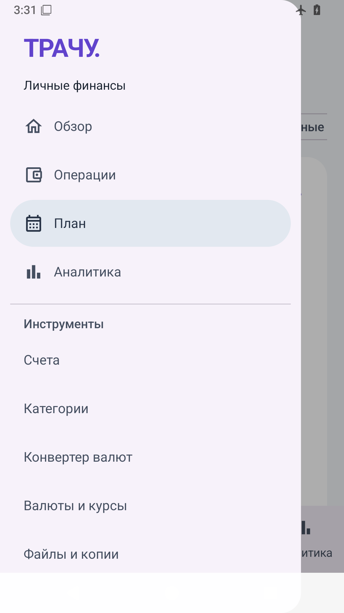
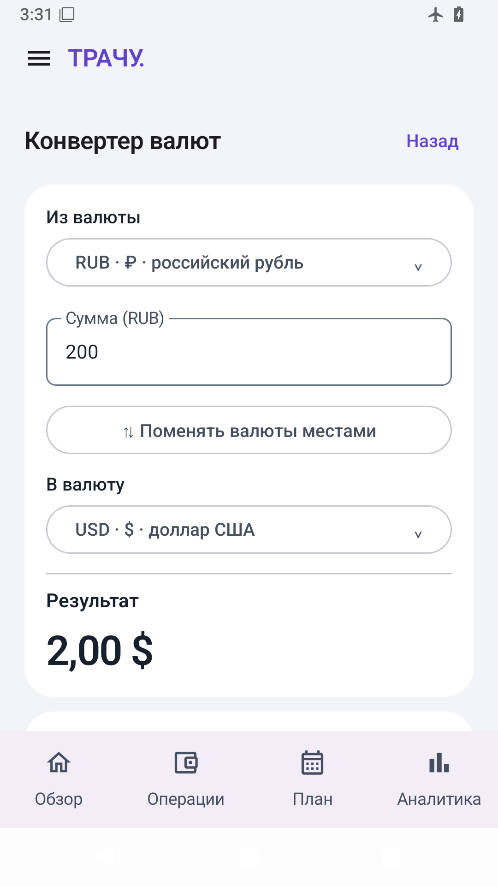
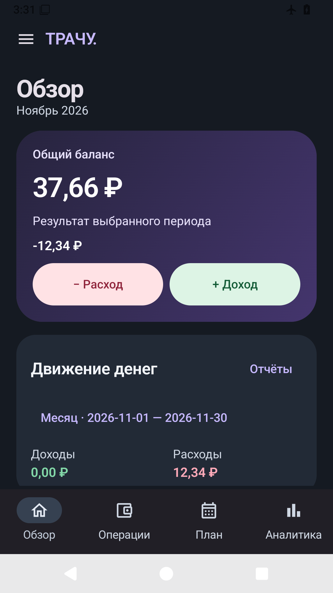
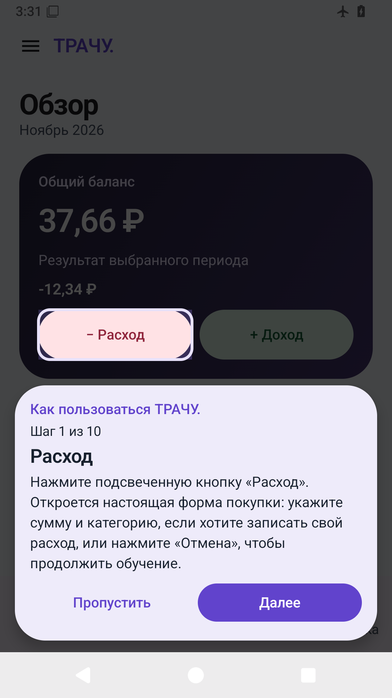
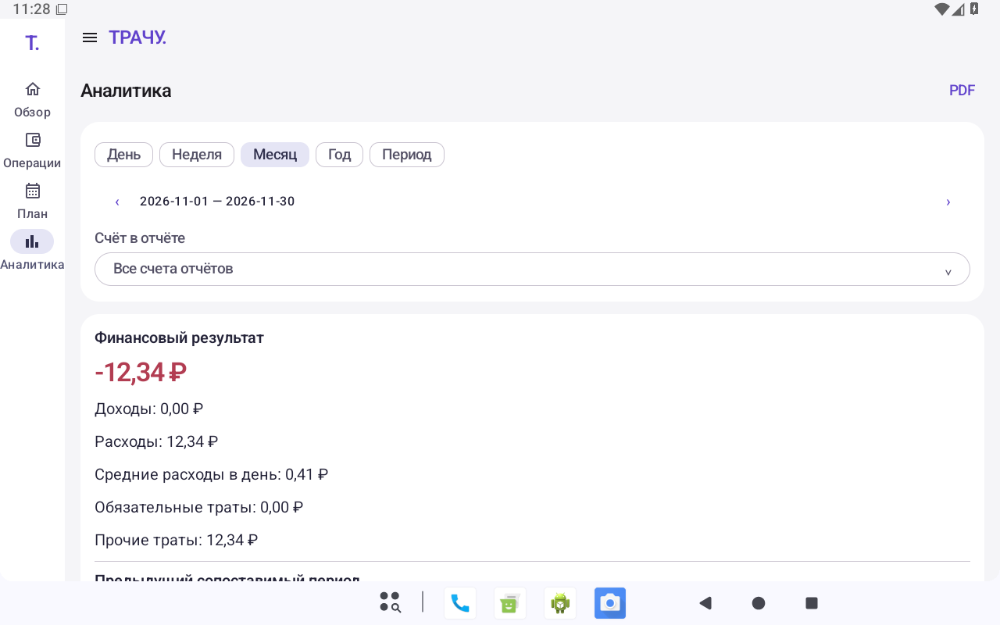

Доходы и расходы
Выбирайте сумму, дату и категорию; создавайте свои категории прямо при записи. Добавляйте теги и чеки.
Android · личные финансы
Понимайте, куда уходят деньги, планируйте расходы и приближайтесь к своим целям. Все ваши финансы в одном месте.
Без регистрации · Основные функции офлайн · Android 8.0+
Иллюстрация интерфейса · условные данные
01 / Возможности
От повседневных покупок до крупных целей — записывайте, анализируйте и планируйте.
Выбирайте сумму, дату и категорию; создавайте свои категории прямо при записи. Добавляйте теги и чеки.
Счета в разных валютах, переводы и конвертер с автоматическим обновлением курсов ЦБ, сохранёнными и ручными курсами.
Задавайте лимиты по категориям и следите за остатком в течение месяца.
Пополняйте цели, просматривайте историю накоплений, учитывайте долги, проценты и погашения.
Планируйте регулярные и будущие платежи. Оценивайте баланс по запланированным операциям.
Переключайте структуры расходов и доходов, экспортируйте CSV и PDF, создавайте копию с паролем.
02 / Интерфейс
Выберите пример экрана. Все суммы вымышлены, изображения показывают концепцию интерфейса, а не снимки готового релиза.
Выберите, нужны ли напоминания, валюту и остаток первого счёта. В 1.2.0 обучение с подсветкой кнопок можно повторить через раздел «Помощь». Светлая и тёмная темы.
В приложении также предусмотрены защита PIN, биометрия и виджет быстрого доступа.
Интерфейс приложения
Скриншоты интерфейса на смартфоне и планшете.










03 / Конфиденциальность
Записи хранятся в приватной области приложения. Для основных функций не нужна регистрация. Курсы валют можно получать из публичного сервиса Банка России. При экспорте вы сами выбираете место сохранения файла. В сборке с рекламой на обзоре может отображаться небольшой баннер Яндекса; он не появляется во время ввода операций. Сведения об обработке технических данных приведены в политике конфиденциальности.
04 / Вопросы
Нет. Вы самостоятельно вносите записи или импортируете поддерживаемые файлы. ТРАЧУ. не совершает платежи.
Да, основные функции учёта работают офлайн. Для получения официальных валютных курсов и сетевых сервисов необходим интернет.
Создайте резервную копию с паролем, перенесите файл и восстановите его в приложении. Не теряйте пароль.
Публичный выпуск в магазине готовится. Ссылка на RuStore появится после публикации приложения.
05 / Выпуск
Подготовка версии 1.2.0 к публикации продолжается. Ссылка на страницу приложения в RuStore появится после завершения публикации.